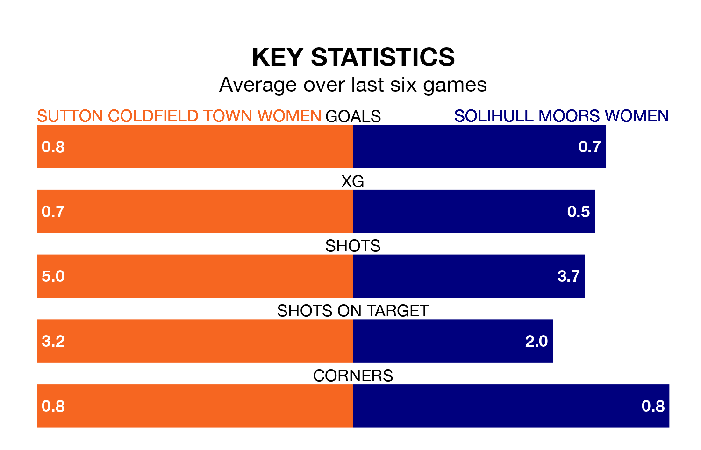

Sutton Coldfield Town Women host Solihull Moors Women on Sunday in Women's National League Division One Midlands.
In their last league match, on January 21, Sutton Coldfield Town drew with Notts County Women 0-0 away.
Solihull Moors also drew, 0-0 at home against Sheffield FC Women on January 28.
With 17 goals in 13 games so far this season, Solihull Moors are scoring at below the league average rate with 1.3 goals per game. But they are conceding fewer than average too, letting in 19 goals at a rate of 1.5 per game.
Sutton Coldfield Town are also below average scorers, with 1.5 goals per game, compared to a league average of 1.8. They have conceded 1.6 goals per game.
The hosts are in mixed form in Women's National League Division One Midlands, with two wins and a draw from their last six games.
With a win and two draws over that period, the away side's form is slightly worse – they have taken five points from 18, compared to Sutton Coldfield Town's seven.
Sutton Coldfield Town are seventh in the table after 14 games, of which they have won five and drawn two, earning 17 points.
Solihull Moors are one place ahead of the home team in sixth, with five wins and three draws putting them on 18 points.
Updated: 11:47 (UTC), 05/02/24